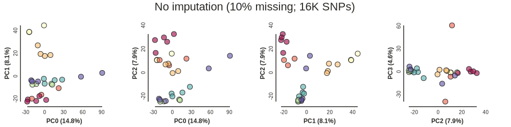
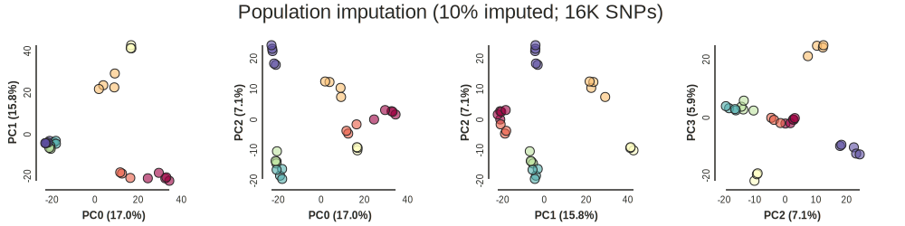
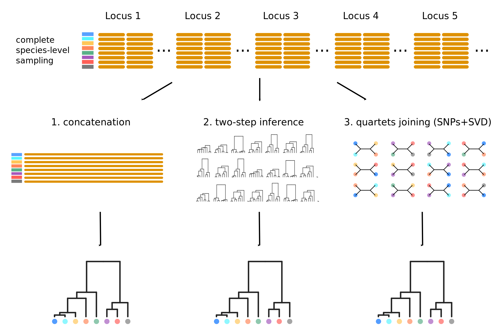
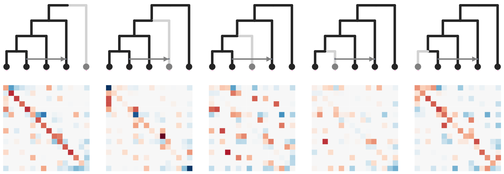

Sliding Windows, Species Trees and SNPs:
RAD applications in plant phylogenomics
Evolution 2019, Providence
Deren Eaton, Columbia University
The goal of phylogenomics
Characterize evolutionary relationships from a subset of sampled genomes.

RAD-seq phylogenomics
Characterize whole genomes from a subset of sequenced markers.
Efficiently (time, cost, coverage) sequence thousands of loci.

Coalescent variation
Different genomic regions have different genalocial histories.

Can RAD-seq reconstruct genome-wide patterns?
Missing data (big problem for some analyses but not all).
Filtering and formatting data for downstream analyses.

Outline: RAD-seq phylogenomics in ipyrad
1. ipyrad-analysis toolkit.
2. Gene tree extraction: concatenation.
3. Gene tree distributions: sliding window consensus.
4. Sticking with SNPs: genome-wide inference.
ipyrad-analysis toolkit (and toytree) and jupyter

ipyrad-analysis toolkit (and toytree)
Filter or impute missing data; easily distribute massively parallel jobs.
import ipyrad.analysis as ipa
# initiate an analysis tool with arguments
tool = ipa.pca(data=data, ...)
# run job (distribute in parallel)
tool.run()
# examine results
...
Quercus section Virentes
35 samples, 7 species plus outgroups.
ipyrad (ref): 58K loci, 51% missing, 484K SNPs. (30 min., 40 cores).

Hipp et al. (2014); Eaton et al. (2015); Cavender-Bares et al. (2015)
PCA: very sensitive to missing data
PCA: very sensitive to missing data

PCA: clear delimitation when (some) data are imputed

Outline: RAD-seq phylogenomics in ipyrad
1. ipyrad-analysis toolkit.
2. Gene tree extraction: concatenation.
3. Gene tree distributions: sliding window consensus.
4. Sticking with SNPs: genome-wide inference.
Missing data in phylogenetics
Missing data in phylogenetics

Missing data in phylogenetics

Window_extracter: extract, filter, format.
Reference mapped RAD loci can be "spatially binned" to form larger loci.
import ipyrad.analysis as ipa
# initiate an analysis tool with arguments
tool = ipa.window_extacter(
data=data,
scaffold_idx=0,
start=0,
end=1000000,
)
# writes a phylip file
tool.run()
Window_extracter: extract, filter, format.
Reference mapped RAD loci can be "spatially binned" to form larger loci.

Window_extracter: extract, filter, format.
Reference mapped RAD loci can be "spatially binned" to form larger loci.

Herbicide resistance among Amaranthus species.

Missing data in phylogenetics

Missing data in phylogenetics
Goal: A distribution of gene trees representing every species.
Missing data: Consensus sampling
Represent species by the consensus genotype across sampled individuals

treeslider: extract windows across chromosomes.
Runs raxml on windows and parses results into a "tree_table"
# define population groups
imap = {
"sp1": ["a0", "a1", "a2", "a3"],
"sp2": ["b0", "b1", "b2", "b3"],
"sp3": ["c0", "c1", "c2", "c3"],
"sp4": ["d0", "d1", "d2", "d3"],
}
# initiate an analysis tool with arguments
tool = ipa.treeslider(
data=data,
window_size=1e6,
slide_size=1e6,
imap=imap,
)
# distributes raxml jobs across all 1M windows in data set
tool.run()
Consensus sampling yields 3X as many fully sampled loci.
One sample of each species: 12K/57K loci
Consensus for each species: 32K/57K loci
Hipp et al. (2014); Eaton et al. (2015); Cavender-Bares et al. (2015)
Sliding windows
How well do concatenated RAD windows represent gene tree variation?

RAxML gene trees.
Sliding windows
How well do concatenated RAD windows represent gene tree variation?

Astral species trees inferred from gene trees.
Clade weights
Chrom 1 weighted support for a (Cuba, Florida) vs (Cuba, Mexico)

Missing data in phylogenetics

SNP-based species trees (and networks)
SVDquartets uses invariant patterns to infer quartet trees from SNPs.
Each quartet is inferred independently, so missing data has almost no effect.
But invariant patterns among quartets can be highly informative.
See McKenzie Poster #76 (Monday);
Conclusions
1. With ipyrad-analysis it is easy to run dozens of analyses optimized for RAD missing-ness with a few lines of code.
2. Concatenating RAD loci in scaffold windows, and consensus or imputation sampling, dramatically improve the utility of RAD.
3. SNP based methods are in their infancy, but can work well with RAD.
Acknowledgements
Oaks data set:
Jeannine Cavender-Bares
Andrew Hipp
Antonio Gonzalez-Rodriguez
ipyrad development:
Isaac Overcast
Eaton lab members
Funding:
NSF DEB 1557059
Columbia University
Questions?
RADcamp wetlab and bioinformatics workshop in New York City Oct. 2019
Bring your DNA samples.
Library preparation and sequencing will be free.
(sponsored by SSB, Columbia, CCNY).